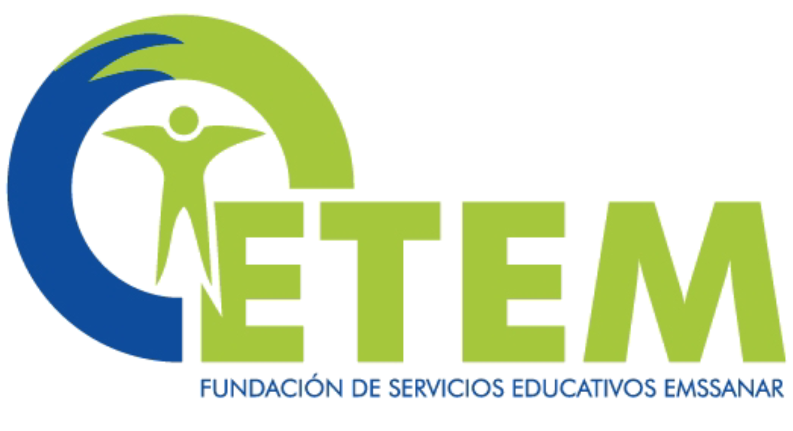

DAVID FELIPE GUSTIN RIVAS
 TELÉFONO:
TELÉFONO:  +57 3244481546
+57 3244481546
WHATSAPP:
+57 3234481546
 CORREO ELECTRÓNICO:
gustinrivasdavid@gmail.com
CORREO ELECTRÓNICO:
gustinrivasdavid@gmail.com
-
 UNIVERSIDAD CESMAG
UNIVERSIDAD CESMAG
Febrero 2021 – En curso
Promedio global de 4.5, actualmente cursando 5 semestre de Ingeniería de Sistemas. -  Cetem Pasto
Febrero 2018 – Mayo 2023
Promedio global de 4.5,Tecnico Laboral En Mantenimiento de Equipos de Computo.
Marzo 2023 – Actualmente
Gestión y administración de más de 120 equipos de cómputo pertenecientes a la institución. Atención a mas de 500 estudiantes y mas de 30 Administrativos gestion de aulas y asignación de horarios, administración de recursos audiovisuales
CETEM PASTO – SOPORTE TÉCNICO
Octubre 2022 – Enero 2023
Gestión y administración de más de 120 equipos de cómputo pertenecientes a la institución. Restablecimiento del tendido de red gestionando la red de Internet y la transición de IP's Dinámicas a IP's Estáticas
COOPUMNAR – ASISTENTE BASE DE DATOS
Abril 2021 – Septiembre 2021
Apoyo a la Gestión de las Bases de Datos con más de 200 Usuarios registrados en el Programa PAE del ICBF
MARIONET- TÉCNICO ASISTENTE
Junio 2019 – Diciembre 2019
Encargado de supervisión de técnicos practicantes, recepción, reparación entrega de todos los equipos recibidos en el taller con una tasa de satisfacción de los clientes del 80%
- Disciplina 100%
- Liderazgo 85%
- Iniciativa 75%
- Flexibilidad 50%
- Creatividad 85%
- CÉDULA CIUDADANIA
- ACTA GRADO BACHILLER
- CONSTANCIAS DE TRABAJO
- REFERENCIAS PERSONALES